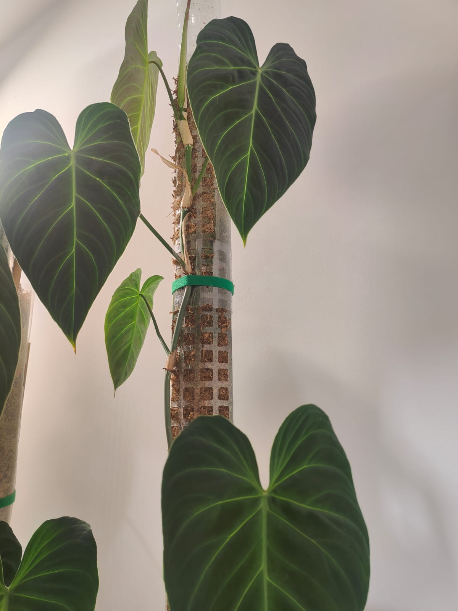

Inside the Greenhouse
From velvety Anthuriums to variegated Monsteras, these are a few favourites I care for when I’m not modelling massive stars.
Monstera ‘Thai Constellation’
Cream-marbled leaves splattered with stars—slow to grow but worth the wait.

Philodendron ‘Splendid’
A velvety hybrid (verrucosum × melanochrysum) with lime-green veining that lives up to its name.
Alocasia micholitziana ‘Frydek’ verigated
Velvet-textured foliage; thrives with warmth, humidity, and bright shade.
Alocasia macrorrhizos ‘Aurea’
Neon-chartreuse elephant-ear; needs plenty of sun and nutrients to keep glowing.
Anthurium pallidiflorum
Pendant, narrow leaves can reach a metre long—loves humidity above 70 %.
Anthurium warocqueanum
The fabled “Queen” with velvety dark leaves and silver midrib—temperamental but majestic.
Syngonium ‘Mojito’
Speckled lime-and-green foliage; unfussy and fast-growing—great for propagation swaps.
Begonia maculata
Polka-dotted leaves and red undersides; appreciates bright shade and even moisture.
Aglaonema pictum ‘Tricolor’
Camouflage-patterned leaves in three shades of green—slow but striking.